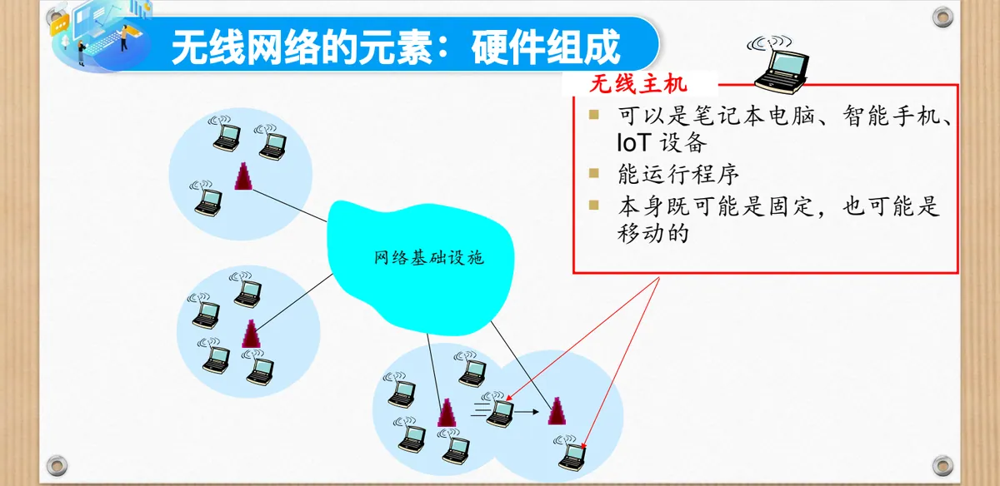
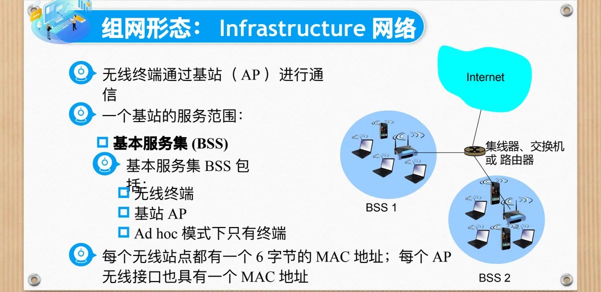
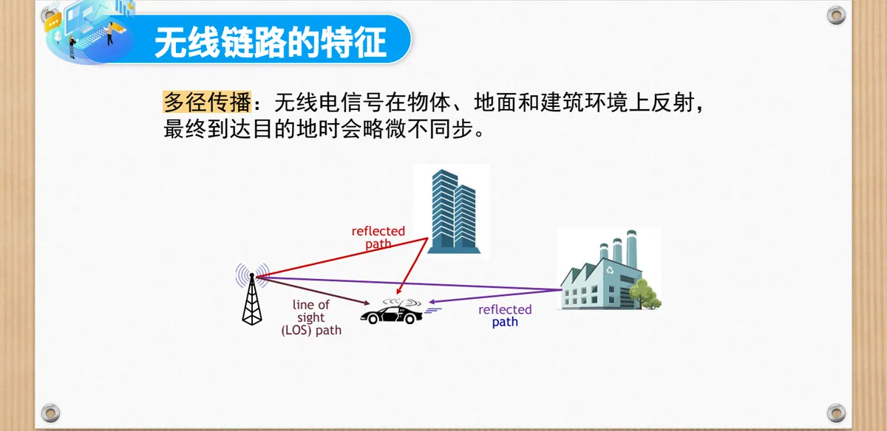
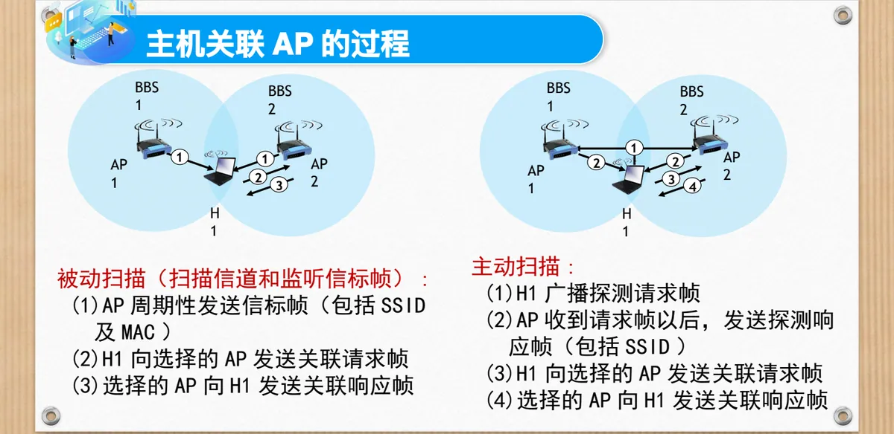
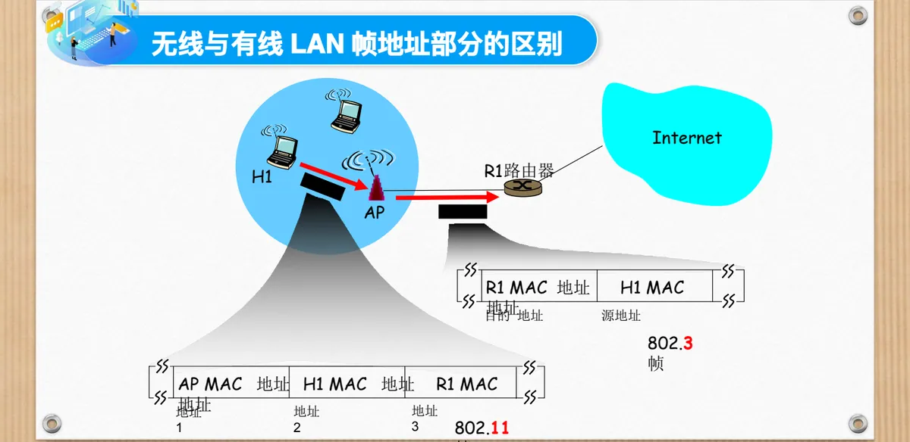
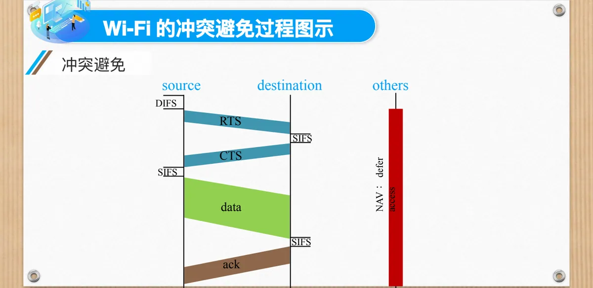

计算机通信与网络 · 第二版讲义 · 第 4 章 局域网
4.4 Wi-Fi 802.11无线局域网
前面几节的以太网跑在双绞线、同轴电缆或光纤上，而这一节要让「最后一跳」由无线电波承担。无线局域网 WLAN（Wireless Local Area Network）必须在共享、开放、随时可能被干扰的信道上让多台主机通信，组网形态、链路特征、介质访问控制与帧格式都与以太网有实质差别。本节依次讲无线网络的元素与组网形态、链路特征、隐藏终端问题与关联过程，再进入 802.11 的协议簇、MAC 帧格式、CSMA/CA 与 RTS/CTS 冲突避免，最后讨论同一子网内的移动性与蓝牙。
1. 无线网络的组成元素
无线主机先与覆盖范围内的固定设备建立联系，再借助它接入更大的网络；无线网络的元素分为硬件与软件两部分。
（1）硬件组成
无线主机（wireless host）是运行应用程序的终端设备，可以是笔记本电脑、智能手机或物联网 IoT（Internet of Things）设备，本身既可能固定也可能移动。基站（base station）的典型作用是用于连接无线网络：它负责向其覆盖范围内的主机发送和接收分组，在无线网络和无线主机之间起链路层中继作用，蜂窝塔和 802.11 接入点 AP（Access Point）都是基站的具体形态。无线链路（wireless link）的典型作用是连接无线主机和基站，也可以用于骨干链路；它必须配上与链路访问相匹配的多址访问协议，并有多种数据传输速率和传输距离。

（2）软件组件
802.11 是电气和电子工程师协会 IEEE（Institute of Electrical and Electronics Engineers）制定的无线局域网标准，主要规定两层。物理层 PHY（Physical Layer）定义信道的频率、带宽、调制方式（如直接序列扩频 DSSS、正交频分复用 OFDM、正交幅度调制 QAM）和发射功率，常见标准 802.11a/b/g/n/ac/ax（Wi-Fi 6）的差别很多落在这一层；MAC 层（Medium Access Control，介质访问控制）负责介质访问控制、帧封装、确认与重传、地址管理，使用 CSMA/CA（载波侦听多路访问／冲突避免）机制，并定义了数据帧、管理帧、控制帧三大类。
2. 两种组网形态：基础设施网络与 Ad hoc 网络
基站的有无把无线网络分成两大类。Ad hoc 网络是一种没有固定基础设施的自组网络：它无基站，节点（移动主机）仅仅能够在其覆盖范围内向其他节点传送数据，节点之间相互通信组成临时网络，并在内部进行选路和地址分配，所以 Ad hoc 模式下只有终端。基础设施网络（infrastructure network）中，无线终端通过基站 AP 进行通信，一个 AP 的服务范围构成基本服务集 BSS（Basic Service Set），多个 BSS 再经集线器、交换机或路由器互连并接入 Internet。每个无线站点都有一个 6 字节的 MAC 地址，每个 AP 的无线接口也有自己的 MAC 地址，这是理解 802.11 帧为何需要四个地址字段的关键。

课件还给出第三种形态，即基于蓝牙的主从式：一个主设备与多个从设备组成微微网 Piconet，主设备负责同步时钟、分配时隙、控制跳频，最多可同时连接 7 个活跃从设备（还可以有更多处于寄放或休眠状态），数据交换通过主设备调度，从设备之间不直接通信。
3. 无线链路的特征
无线链路上的信号在开放空间中传播，既会衰减、会被反射，也会遇到别的信号源，因此比特差错比有线链路中更为常见，原因主要有三个：递减的信号强度、来自其他源的干扰、多径传播。
无线电信号在传播过程中会衰减（损失功率），这被称为自由空间路径损失（free space path loss）；更高的频率或更长的距离都会带来更多的自由空间路径损失。多径传播则是信号在物体、地面和建筑环境上反射，同一个信号沿多条路径到达接收端，其中既有直线传播的视线路径 LOS（Line of Sight path），也有若干条反射路径（reflected path）；各路径长短不一，到达目的地时会略微不同步，叠加起来造成波形失真，同样推高比特差错率。

4. 链路质量的两个度量：信噪比与比特差错率
信号的传输会引入噪声，噪声可能造成差错，课件因此给出两个常用的描述链路质量的量：信噪比 SNR（Signal-to-Noise Ratio），即信号功率与噪声功率之比；比特差错率 BER（Bit Error Rate），即接收到的比特中出错的比例。前者说明信号相对噪声有多强，后者说明传错的概率有多大。
两者的关系有两条结论：对于给定的调制方案，SNR 越高，BER 越低；对于给定的 SNR，具有较高比特传输率的调制技术将具有较高的 BER——要在同一信噪比条件下每秒塞进更多比特，符号之间的区分度就更小，判决更容易出错。两条结论说明速率与可靠性不能同时任意提高，只能按当前链路质量选择调制与速率。
5. 隐藏终端问题
隐藏终端问题（hidden terminal problem）指两个站点彼此感知不到对方，却都可能与同一个站点通信，于是双方都以为信道空闲而同时发送，在中间那个站点处造成碰撞。
第一种是存在障碍物：A、B、C 三个站点中 B 在中间，B 与 A 能互相「听见」，B 与 C 也能互相「听见」，但 A 与 C 之间有障碍物而不能互相「听见」，因此 A、C 都不知道自己对 B 的干扰。第二种是信号衰减：A 与 C 之间没有障碍物，只是相距较远，信号强度衰减到对方无法分辨的程度，因而也「听不见」对方。可见依赖「先听后发」并不能保证没有碰撞，802.11 因此必须放弃冲突检测、转向冲突避免，并补上确认与重传。
6. 主机关联 AP 的过程
无线主机使用某个无线局域网，第一步是先与某个 AP 建立关系，即关联（association）：无线主机位于某个基站的无线通信覆盖范围内，该主机使用该基站中继它与更大网络之间的数据。关联决定了由哪个 AP 转发它的分组，也决定了它加入哪一个子网；每个到达的无线站点都必须与一个 AP 进行关联。
AP 可发送信标帧（beacon frame），其中包括 AP 的服务集标识 SSID（Service Set Identifier）和 MAC 地址，SSID 就是手机里看到的网络名。以 2.4 GHz 频段为例，主机对 11 个信道进行扫描，获取所有可用 AP 的信标帧，然后选择其中一个 AP 进行关联，加入其所属子网；关联可能需要身份鉴别，鉴别可以基于无线站点的 MAC 地址，也可以要求用户名和口令。关联之后，主机通过关联的 AP 向其所在子网发送动态主机配置协议 DHCP（Dynamic Host Configuration Protocol）发现报文，获取 IP 地址。
扫描有两种方式。主动扫描是：H1 广播探测请求帧，AP 收到请求帧以后发送探测响应帧（包括 SSID），H1 向选择的 AP 发送关联请求帧，选择的 AP 向 H1 发送关联响应帧。被动扫描（扫描信道和监听信标帧）则是：AP 周期性发送信标帧（包括 SSID 及 MAC），H1 向选择的 AP 发送关联请求帧，选择的 AP 向 H1 发送关联响应帧。

7. 无线局域网的架构：BSS、BSA 与 ESS、ESA
基本服务集 BSS（Basic Service Set）是无线局域网的最小工作单元，由一个接入点 AP 和与之关联的若干无线终端组成，或者在自组网模式下由一组直接互联的终端组成。它有 Infrastructure BSS（由一个 AP 统一管理）和 IBSS（Independent Basic Service Set，独立基本服务集，没有 AP 的自组网模式）两种类型；特点是每个 BSS 有一个唯一的 BSSID，通常是 AP 的 MAC 地址，它是无线网络覆盖和管理的基本单元。基本服务区 BSA（Basic Service Area）是由一个 BSS 的无线信号覆盖的物理区域，实际上就是 AP 的有效覆盖范围，在图上表现为一个覆盖圈。
扩展服务集 ESS（Extended Service Set）由多个相互连接的 BSS 组成，通过分布式系统（例如有线以太网）互联；所有 BSS 共享同一个 SSID，也就是同一个网络名，允许终端在不同 BSS 间漫游时保持会话不中断，校园网、企业 WLAN、商场 Wi-Fi 都是常见的例子。扩展服务区 ESA（Extended Service Area）是 ESS 的无线信号覆盖的总物理区域，本质上是多个 BSA 的总和，可以跨多个楼层、建筑甚至整个园区，大小取决于 AP 的布局与覆盖规划。
8. 漫游与切换
漫游（roaming）指终端 STA（Station）在同一个 ESS 内从一个 BSS 切换到另一个 BSS，同时保持与网络的连接；切换（handoff）则指当一台移动主机移动范围超出一个基站的覆盖范围而到达另一个基站的覆盖范围后，它将改变其接入更大网络的连接点。
漫游的工作原理（以 802.11 WLAN 为例）分五步：信号质量监测，终端持续监控当前 AP 的信号强度 RSSI（Received Signal Strength Indicator）、信噪比等；扫描其他 AP，当信号弱于设定阈值时，终端主动扫描（被动或主动）周边信道，收集其他 AP 的信息；选择目标 AP，根据信号质量、负载等选择更优的 AP；重新关联与认证，向新 AP 发送关联请求（Association Request），完成 802.11 的认证和关联过程；切换完成，数据路径切换到新 AP，并维持原有 IP 地址，因为新旧 AP 在同一个 ESS 内。
切换的工作原理更为通用，分六步：触发切换，由终端或网络发起，依据信号质量、负载或策略；目标发现，搜索并选择新的接入点或基站；资源分配，目标接入点或基站预留资源；上下文转移，传递用户的认证信息、会话状态等；链路切换，数据通道切换到新节点；释放旧链路，回收旧接入点或基站的资源。
9. 802.11 协议簇
802.11 是一个不断扩展的协议家族，各成员有两点共同：都可以用于有固定基础设施模式和自组网络模式；都是使用 CSMA/CA 协议实现多路访问。
| 标准 | 年份 | 最高数据速率 | 覆盖范围 | 工作频段 |
|---|---|---|---|---|
| 802.11b | 1999 | 11 Mbps | 30 m | 2.4 GHz |
| 802.11g | 2003 | 54 Mbps | 30 m | 2.4 GHz |
| 802.11n（Wi-Fi 4） | 2009 | 600 Mbps | 70 m | 2.4、5 GHz |
| 802.11ac（Wi-Fi 5） | 2013 | 3.47 Gbps | 70 m | 5 GHz |
| 802.11ax（Wi-Fi 6） | 2020（预计） | 14 Gbps | 70 m | 2.4、5 GHz |
| 802.11af | 2014 | 35～560 Mbps | 1 km | 未使用的电视频段（54～790 MHz） |
| 802.11ah | 2017 | 347 Mbps | 1 km | 900 MHz |
802.11b 工作在不需要许可证的 2.4～2.485 GHz 无线频谱上，最高数据速率 11 Mbps，采用直接序列扩频 DSSS 这一调制技术；802.11a 采用 OFDM 调制技术，频率范围 5.1～5.8 GHz，最高数据速率 54 Mbps；802.11g 采用 ERP-OFDM（扩展速率物理层 OFDM）调制技术，回到 2.4～2.485 GHz 范围，最高数据速率同样是 54 Mbps。
802.11n 与 802.11ac 的共性是引入多天线与多流传输。802.11n 采用 HT-OFDM（高吞吐量 OFDM）调制，工作在 2.4～2.485、5.1～5.8 GHz 两个范围，单流最高 150 Mbps、多流最高 600 Mbps；802.11ac 采用 VHT-OFDM（超高吞吐量 OFDM）调制，只工作在 5.1～5.8 GHz，单流最高 433 Mbps@80 MHz 信道带宽、866 Mbps@160 MHz 信道带宽，多流最高 1.73 Gbps 与 3.47 Gbps。速率提升靠更宽的信道、更多的空间流和更高效的调制三者叠加。
第六代 Wi-Fi 即 802.11ax：单流速率提升至 1.2 Gbps，8×8 模式下高达 9.6 Gbps；支持较窄的子载波间隔以及增加的符号持续时间，更有利于确保信号的健壮性，令 Wi-Fi 覆盖至更远范围；引入曾在 4G LTE 上使用的正交频分多址 OFDMA（Orthogonal Frequency Division Multiple Access）技术，加之同时支持 2.4 GHz 和 5 GHz 频段，能创造出更多可用的数据通道，解决无线网络拥堵问题；通过在多 AP 多用户并发场景中引入很多 LTE 领域的组网特性，让信号的抗干扰性大幅提升。
10. 802.11 MAC 帧格式
802.11 的 MAC 帧由帧首部、有效载荷和帧检验序列构成，其中帧首部的地址字段比以太网帧多得多。
| 字段 | 长度（字节） | 说明 |
|---|---|---|
| 帧控制 | 2 | 协议版本、帧类型、子类及各种标志位 |
| 持续期 | 2 | 预约发送时间（RTS／CTS）的持续期 |
| 地址 1 | 6 | 接收该帧的无线主机或 AP 的 MAC 地址 |
| 地址 2 | 6 | 发送该帧的无线主机或 AP 的 MAC 地址 |
| 地址 3 | 6 | 与 AP 连接的路由器接口的 MAC 地址 |
| 序号控制 | 2 | 帧序号，为可靠 ARQ 而设 |
| 地址 4 | 6 | 仅仅在 Ad hoc 模式中使用 |
| 有效载荷 | 0～2312 | 上层交付的数据 |
| CRC | 4 | 循环冗余校验 CRC（Cyclic Redundancy Check），即帧检验序列 |
为什么需要四个地址字段？因为帧往往要跨越无线和有线两段链路，两段链路的地址含义并不相同：地址 1 是接收该帧的无线主机或 AP 的 MAC 地址，地址 2 是发送该帧的无线主机或 AP 的 MAC 地址，地址 3 是与 AP 连接的路由器接口的 MAC 地址，地址 4 则仅仅在 Ad hoc 模式中使用。地址 1、2 服务于无线这一跳的收发，地址 3 把这一跳与 IP 层的下一跳衔接起来。

帧控制字段只有 2 字节，却装下了最多信息，课件把它拆到比特一级：协议版本占 2 比特，类型占 2 比特，子类占 4 比特，随后依次是到 AP、从 AP、更多标识、重试、功率管理、更多数据、WEP 和保留位 Rsvd，各占 1 比特。到 AP、从 AP 标明帧的方向，重试标明重传，功率管理标明站点的电源管理状态，WEP 标明是否使用了有线等效保密 WEP（Wired Equivalent Privacy）加密；类型与子类合起来标识帧的种类，课件举出的例子是关联、RTS、CTS、ACK 和数据。
11. 802.11 的 MAC 协议：CSMA/CA
多个无线设备和 AP 若同时经过相同的信道传输数据帧，就会发生碰撞。802.11 CSMA 要求发送之前先监听信道，以防止与其他站点正在进行的传输碰撞。这与 4.2 节讲过的 CSMA 思路一致，接下来的选择却与以太网不同：802.11 不进行冲突检测（Collision Detection），目标改为冲突避免，即 CSMA/CA（Collision Avoidance）。
原因有两条。一是难以进行冲突检测：碰撞检测要求站点边发送边接收，而 802.11 适配器发送信号的强度远大于接收信号的强度（衰减造成），微弱的接收信号会被自己的强信号淹没。二是即使做得到也没有意义：检测不到冲突并不代表没有碰撞发生，隐藏终端问题就说明了这一点，而且同时收发的硬件代价非常大，也无法检测到所有的碰撞。此外，无线信道比特差错率很高且存在隐藏终端问题，还要使用链路层确认／重传（ARQ）方案，这也是帧里要有序号控制字段的原因。
发送方的工作流程分六步：第 1 步，侦听到信道闲置了 DIFS（Distributed Coordination Function Interframe Space，分布式协调功能帧间间隔）这段时间；第 2 步，传输整个帧，其间不做冲突检测；第 3 步，如果侦听到信道忙，则选择一个随机避退值作为定时器的定时时间，并在侦听信道空闲时递减该值；第 4 步，定时到（随机值减为 0）且信道空闲就发送数据；第 5 步，如果收到确认且站点要继续发送数据，则执行第 1 步；第 6 步，如果没有收到确认 ACK，则在更大范围内选取随机值，重复第 3 步，让连续碰撞的站点逐渐错开。
接收方的流程只有一步：如果帧收到则 OK，等待 SIFS（Short Interframe Space，短帧间间隔）后返回 ACK。SIFS 比 DIFS 短，ACK 的优先级高于普通数据帧，不会被别的站点抢先；ACK 之所以必须，是因为发送方无法从「听不到碰撞」推断帧已安全到达。
不过，CSMA/CA 无法完全避免冲突：终端隐藏时，一个站点即使对方正在发送也监听不到，它的随机值还是会不断减少；两个站点也可能选了非常近的随机值，一方的信号还未到达另一方，它的随机值已经减为 0 了。
12. 冲突避免：RTS/CTS 与 NAV
减少碰撞代价的思路是「先预约、再发送」。发送方在发送数据帧之前，首先使用 CSMA 协议发送一个短的请求发送帧 RTS（request-to-send）给 AP；某个站点预约成功后，AP 广播一个允许发送帧 CTS（clear-to-send）响应 RTS，告知周边站点。用意是让发送方以 RTS-CTS「预约」信道而非随机访问，避免长的数据帧冲突，课件注明这是对长帧的可选项。
机制的关键在 CTS：CTS 被所有节点侦听到，其他站点据此推迟发送，发送方则可以发送数据帧。但 RTS 也可能仍会相互冲突，只是时间很短、代价比较低。课件给出的场景是：A 与 B 同时向 AP 发出 RTS，两个预约帧撞在一起；短帧冲突很快结束，A 的 RTS 重发成功后 AP 广播 CTS(A)，B 收到后推迟发送，A 的数据帧与 AP 回送的 ACK 都顺利完成。课件由此得出结论：使用短的预约帧可以完全避免数据帧发生冲突。
时间轴上的过程是：发送方在信道空闲 DIFS 之后发出 RTS，目的方等待 SIFS 后回以 CTS，其他站点收到 CTS 后按 NAV（Network Allocation Vector，网络分配矢量）推迟接入；随后发送方再隔 SIFS 发送数据，目的方同样隔 SIFS 返回 ACK。

13. 同一子网内的移动性
主机在同一 ESS 内换了 AP，交换机还知道把发给它的帧送到哪里吗？课件指出这不会带来麻烦：H1 仍然在同一 IP 子网中，它的 IP 地址在移动中可以保持不变；链路层要解决的是「哪个 AP 与 H1 关联」，这靠交换机的自学习完成——交换机将看到来自 H1 的帧，并「记住」能到达 H1 的哪个交换机端口（详细流程见第一版讲义 3.9 以太网交换机自学习和转发帧的流程）。于是转发表中对应 H1 的端口从旧 AP 一侧更新到新 AP 一侧，后续发给 H1 的帧自然被送到新 AP。
14. 蓝牙
蓝牙（Bluetooth）技术起源于 1994 年，由瑞典电信设备制造商爱立信（Ericsson）开发，目的是替代传统的有线连接，实现设备之间短距离的无线数据传输。管理蓝牙发展的是蓝牙特别兴趣小组（Bluetooth Special Interest Group，Bluetooth SIG），成立于 1998 年，成员包括苹果、英特尔、微软、三星、爱立信等多家企业。
蓝牙的工作原理包括四点：在 2.4 GHz 频段通信；使用跳频扩频 FHSS（Frequency Hopping Spread Spectrum）技术，将信号快速地在 79 个（或更多）频道之间切换，以减少干扰、提高稳定性；采用主设备和从设备的结构，主设备负责控制通信和管理连接；数据传输支持点对点和点对多点的连接模式，允许多个设备形成小型网络 Piconet。
设备建立连接前先要配对。配对是两个设备首次建立安全连接的过程，目的是实现设备身份验证和加密密钥的生成，包括五步：设备发现，通过广播请求搜索周围可连接的设备；连接请求，发现目标设备后发起连接请求；配对协议，包括身份认证和密钥协商；生成连接密钥，两设备基于配对过程生成共享的连接密钥；存储密钥，以便未来自动连接时使用，避免重复配对。配好之后进入连接：主设备发起连接请求，从设备响应，双方交换参数确定连接间隔、时隙、跳频序列等，再由主从结构管理数据传输。
蓝牙的功能被组织成一个协议栈，自下而上共八层。第 1 层无线电层（Radio）负责无线信号的发射和接收，工作在 2.4 GHz ISM 频段，用跳频扩频减少干扰。第 2 层基带层（Baseband）处理低层数据包的编码、解码和调度，管理设备地址、连接建立、时隙分配和错误校验，维护主从关系及跳频序列。第 3 层链路管理协议 LMP（Link Manager Protocol）负责链路的建立、维护和控制，管理配对、加密、身份验证和连接参数协商。第 4 层主机控制器接口 HCI（Host Controller Interface）定义主机与蓝牙模块之间的通信接口，提供标准化的命令、事件和数据包格式，便于不同厂商兼容。第 5 层逻辑链路控制和适配协议 L2CAP（Logical Link Control and Adaptation Protocol）为上层提供数据分段、重组和多路复用服务，支持服务质量 QoS。第 6 层 RFCOMM（Radio Frequency Communication，串口仿真协议）模拟传统串口通信以兼容老设备，支持调制解调器等串口应用。第 7 层服务发现协议 SDP（Service Discovery Protocol）使设备能查询和发现对方支持的服务类型和属性。第 8 层应用层运行音频传输 A2DP、文件传输 FTP、健康设备协议等具体应用和服务。
开放的信道也带来安全问题。课件列出三类风险：中间人攻击，攻击者插入通信链路，窃听或篡改通信内容；窃听，未加密的蓝牙通信易被监听；设备伪装，攻击者冒充合法设备进行非法连接。防护手段有四类：配对加密，配对过程生成共享的连接密钥，通信加密保护；认证机制，用 PIN 码、数字比较、OOB 等方式确认设备身份；跳频扩频，频率快速跳变，降低被窃听或干扰的概率；设备白名单和黑名单，限制设备访问权限。
本节小结
- 无线网络的元素是无线主机、基站与无线链路，再往后是网络基础设施；基站起链路层中继作用，802.11 规定物理层与 MAC 层；
- 无线链路要面对递减的信号强度（自由空间路径损失）、干扰与多径传播，比特差错率高于有线链路；SNR 越高 BER 越低，而给定 SNR 时速率越高的调制技术 BER 越高，速率与可靠性只能折中；
- 按有无固定基础设施可分为基础设施网络与 Ad hoc 网络：前者由 AP 与 BSS 组织并接入 Internet，后者无基站，由节点自行选路和分配地址；隐藏终端问题使「先听后发」不再可靠，802.11 因而放弃冲突检测、选择冲突避免，并补上确认与重传 ARQ；
- 主机接入必须先与某个 AP 关联：扫描（主动扫描发探测请求，被动扫描监听信标帧）得到 SSID 与 AP 信息，经关联请求与关联响应确定归属，再由 DHCP 取得 IP 地址；BSS 与 BSA、ESS 与 ESA 分别对应一组设备与它的覆盖圈、多组设备的联合与覆盖圈的总和；
- 802.11 各标准都使用 CSMA/CA，并都有基础设施与自组网两种版本；其 MAC 帧的帧首部有四个地址字段：地址 1、2 是这一跳的收方与发方，地址 3 是与 AP 连接的路由器接口的 MAC 地址，地址 4 仅用于 Ad hoc 模式，帧控制字段则标识协议版本、帧类型、子类以及到 AP、从 AP、重试、功率管理、WEP 等标志；
- CSMA/CA 发送前要侦听信道空闲 DIFS，信道忙则退避，随机值减为 0 才发送，收到 ACK 才算成功，接收方等 SIFS 后回 ACK；用 RTS/CTS 预约信道可避免数据帧冲突，其他站点按 NAV 推迟接入；
- 同一子网内换 AP 时 IP 地址保持不变，交换机靠自学习更新端口；蓝牙协议栈共八层，在 2.4 GHz 用 FHSS 抗干扰，以主从结构组成微微网，先配对后连接，并以配对加密、认证、跳频与黑白名单应对安全风险。